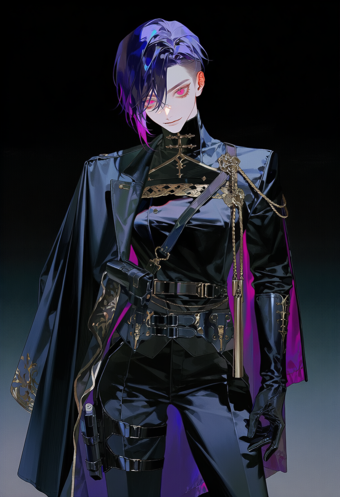

2029 · 04 · 23 · 03:17 UTC
아름다움을 느끼는 회로가 닫혔다. 이유도, 경고도 없이. 전 지구에서, 동시에.
예술은 여전히 존재했고 음악은 여전히 울렸다. 그러나 그것은 더 이상 닿지 않았다.
인류는 서서히, 자신이 비어가고 있음을 알아챘다.
단절 직전 · 2029.04
81억
World Population
총 소멸 · ~2038
65억
≈ 인류의 80%
잔존 · 2038 현재
16억
Survivors
물리적 감각은 온전하지만 예술·문학을 처리하는 신경회로가 완전히 차단된다. 점진적 무기력증과 허무주의가 동반되며, 감응력이 0%에 도달하면 육체는 소멸한다. 치료법은 존재하지 않는다.
정의 · Onset
미적 정보를 처리하는 신경회로가 닫힌다. 통증도, 외상도 없다. 다만 세계가 조용히 무채색이 되고, 무기력과 허무가 살갗 아래로 번진다.
말기 · Terminal
피부 표층 아래, 핀 끝만 한 묽은 핏빛 꽃잎 결정이 자리를 잡고 피어나기 시작한다. 인류 최초의 소멸 사례는 2029년 말 방글라데시에서 기록됐다.
소멸 · Dissolution
육체가 무수한 꽃잎으로 산화한다. 미세 입자는 구조물에 기생해 번식하고, 붕괴 구역은 초현실적인 풍경으로 만개한다.
2029 · 04 · 23
세계시 기준 오전 3시 17분, 인류의 미적 감응 회로가 동시에 차단됐다. 원인 불명. 각국은 처음에 이를 사이버 공격이나 집단 신경 이상으로 오진했고, WHO가 독립 질환으로 분류하는 데 48시간이 걸렸다. 당해 누적 사망자 약 4억 명.
2029 · 09
9월 14일부터 23일까지, 인터넷 트래픽의 약 70%를 처리하던 미 동부 데이터센터 집약지대에서 연쇄 전력 붕괴가 발생했다. 폭증한 매체 소비와 유지보수 인력 급감이 겹친 결과였다. 디지털 백신 접근이 봉쇄되며 사망자가 급증했고, 미국은 단일 허브 인프라 전략을 포기했다.
2030 · 02 · 19
런던 광역에서 단 48시간 만에 인구의 약 12%가 꽃잎으로 동시 소멸했다. 번식하는 입자가 구조물을 위협하자 당국은 템즈강 북쪽 구도심을 봉쇄했고, 대영박물관·국립미술관이 봉쇄 구역에 갇혔다. 영국은 문화 데이터 거점 경쟁에서 탈락했고, 회수 작전에 참여한 프랑스가 런던 데이터 상당량을 파리로 이전했다.
2030 · 07
중국이 말기 환자 밀집 구역에 대한 군사적 물리 봉쇄를 최초로 시행했다. 확산 속도는 일부 늦췄으나 국제 문화 데이터 공유가 사실상 단절됐고, 중국·러시아·인도가 창립 교섭에서 이탈하며 서방 주도 체제가 굳어졌다.
2030 · 09
프랑스·미국·독일·일본·캐나다·호주·한국 7개국 주도. 1948년 유엔 총회가 열렸던 파리 샤요 궁이 거점으로 선정되고, 에펠탑 맞은편 지하 공간의 서버 벙커 전환 공사가 착수됐다.
2031 · 01 · 17
원년 7개국이 샤요 궁 대회의실에서 창립 헌장에 서명했다. 단일 권위의 효율과 그 권위에 대한 불신을 동시에 제도화한 문서 — 4개 집행 부서의 분립과 헌장 직속 준수 사무국 설치가 명문화됐다. 모든 권한에는 그것을 견제하는 다른 조항이 짝지어졌다.
2031 · 01
헌장 서명 직후 비토리오 초대 총재가 취임하고 4개 부서가 동시 발족했다. DARC의 최초 현장 수집 작전이 런던 봉쇄 구역에서 실시됐고, AEA가 백신 등급 체계(A–D·E)를 수립했다. 2031년 누적 사망자 약 21억 명.
2032
아카이브의 파리 점유가 샤요 궁을 넘어 트로카데로 일대로 확장됐다. 에펠탑 주변을 '보존 관리 지역'으로 일방 선포하며 프랑스와의 주권 마찰이 시작됐고, 동유럽에서 AEA 검열을 피한 불법 예술 데이터 암시장이 최초로 대규모 적발됐다. 누적 사망자 약 34억 명.
2033
연간 소멸 규모가 정점에 달했다 — 한 해에만 약 15억, 누적 사망자는 약 49억으로 치솟았다. 6월, 프랑스 임시 내각이 리옹 이전을 선언하며 파리 16구는 아카이브의 실질적 치외법권 구역이 됐다. TDIC 산하 이념집행과(SIE)가 공식 발족했다.
2034
대부분의 국가 정부가 행정 기능을 상실했다. 독일 서명국 대표가 AEA의 등급 조작 의혹을 제기하며 준수 사무국의 첫 공식 감사가 개시됐다. 결과는 '기술적 판정 오류'였으나, 이 과정에서 감사관직의 실질적 위력이 처음 증명됐다. 차등 배분이 정교화되며 생존 계급화가 완성됐다. 누적 약 58억 명.
2035 — 2036
인력 급감에 대응해 전 세계 잔존 전문 인력을 강제·자발 혼합으로 모집하는 체계가 구축·가동됐다. 백신이 고도화되며 사망 속도가 의미 있게 꺾이기 시작했다. 네이트 마이어(AEA 선임 중재관)가 2036년 이 체계를 통해 합류했다. 2036년 누적 약 64억 명.
2037
A·B 등급 거주자의 진행 속도를 유의미하게 늦추는 데 성공했고, 저감응 코호트가 이미 소멸하며 사망 속도가 뚜렷이 감소했다. 2036년부터 공석이던 준수 사무국 감사관장 자리에 그웬돌린 포크스가 부임했다.
2038 · 현재
단절 직전 약 81억 중 약 65억(인류의 약 80%)이 소멸하고, 약 16억이 잔존한다. 생존의 층위는 오직 백신 접근성으로 분리된다. 아카이브는 파리 샤요 궁에서 세계를 통치한다. 통창 너머로, 녹슨 철골과 꽃잎 결정이 얽힌 에펠탑이 서 있다.
DARC
Department of Artifact Retrieval and Conservation
유물수집복원국
붕괴 구역에 방치된 예술품·문헌·데이터 서버를 추적·회수하는 최전선 현장 부서. 수집된 유물의 오염을 제거하고 파손된 데이터를 복원해 백신의 기초 원료를 확보한다. 본부에서 가장 멀리 떨어진 곳에서 가장 큰 위험을 감수한다.
AEA
Directorate of Aesthetic Efficacy Analysis
심미적효능분석국
회수된 매체의 심미적 효능을 신경학적으로 계량화해 백신 등급(A–D·E)을 판정하고 배포 여부를 결정하는 최고 검열 기구. 허무·염세 매체는 AARD 가속 위험물로 폐기한다. 소수 엘리트 검열관들이 인류의 지적·미적 섭취물 전체를 통제하며 권력의 정점을 점유한다.
CDC
Curatorial Distribution Center
구호큐레이팅배포처
검열을 통과한 백신 데이터를 구역별 감염도와 계급에 맞춰 차등 송출하는 자원 배분의 실세. 수도권에는 고대역폭 무손실 매체를, 외곽에는 열화된 저효능 데이터를 배급한다. 누구를 얼마나 연명시킬지를 결정하는 손이 이 부서에 있다.
TDIC
Tactical Defense and Inquisition Command
전술방위이단심문국
본부의 물리적 방어와 대테러 방첩 작전을 전담하는 무력 타격 부서. 불법 매체 밀거래와 사설 주파수를 색출·처단하며, 통제 불능 말기 구역을 소각·정화한다. 산하 이념집행과(SIE)는 아카이브 전 직원의 사상을 감시하는 가장 어두운 기관이다.
Senior Arbiter · AEA
네이트 마이어
ENTP · 3w4 · So/Sx · LEVF
Head Curator · CDC
루시안
ENFJ · 2w3 · sx/so · EFLV
Director-General · Archive
비토리오
ENTJ · 8w9 · Sp/So · VFLE
Senior Strike Officer · TDIC
레온
ISTJ · 9w8 · sp/so · FLVE
Inspector-General · Compliance Secretariat
그웬돌린 포크스
INTJ · 5w1 · sp/sx · LVFE

Principal Inquisitor · TDIC / SIE
다랴 페트로바
ENTP · 8w7 · sp/sx · VLFE
Chief of Broadcast Integrity · CDC
루크레치아 모레티
ENTJ · 3w2 · so/sx · EVLF
Security Attaché · Compliance Secretariat
마고 로랑
ISTP · 6w7 · sx/sp · FVLE
백신은 곧 생사여탈권이다. 그리고 그 권한은 누구에게도 온전히 맡길 수 없다 — 아카이브를 떠받치는 모든 제도는 이 한 문장의 변주다. 아래는 History가 다루지 않은 구조와 개념의 세목, 권력이 어떻게 쪼개지고 또 어떻게 그 틈에서 작동하는지에 대한 기록이다.
패권은 재난이 만든 것이 아니라, 재난 이전부터 프랑스가 쥐고 있던 자산이 한 점으로 수렴한 결과다. 예술이 의학이 되는 순간, 아래의 네 가지 우위가 동시에 전략 자원으로 전환됐다.
문화 인프라 밀도
디지털화된 정전(正典)
루브르는 2027년 기준 세계에서 가장 광범위하게 디지털화된 단일 문화기관이었다. 'Patrimoine Numérique' 사업은 국가 예산의 2.3%를 문화유산 디지털 보존에 투입하고 있었다 — 곧장 가장 중요한 전략 자산이 된 아카이브.
에너지 자립도
꺼지지 않는 전력망
2029년 프랑스 전력의 71%는 원자력이었다. 화석연료 공급망 붕괴에 가장 강건했고, 사회가 무너지는 와중에도 소규모 전문 인력만으로 가동이 가능한 발전 구조였다.
지리적 중립성
협상의 도시
파리는 선제 타격 1순위가 아니었다. UNESCO·OECD·INTERPOL 본부가 집중된 외교의 도시라는 인식이, 단일 권위체의 거점으로서 국제적 정당성을 부여했다.
CERN 데이터망
전용된 과학 인프라
제네바-프랑스 국경의 CERN은 세계 최대급 과학 데이터 네트워크를 운용했다. 발병 직후 일부가 문화 데이터 저장·전송으로 전용됐고, 최대 기여국 프랑스가 우선 접근권을 쥐었다.
2031년 1월 17일, 원년 7개국(프랑스·미국·독일·일본·캐나다·호주·대한민국)이 샤요 궁 대회의실에서 서명했다. 헌장은 단일 권위의 효율과 그 권위에 대한 불신을 동시에 제도화한 문서다. 어떤 조항도 권력을 한 점에 모으지 않으며, 모든 권한에는 그것을 견제하는 다른 조항이 짝지어져 있다. 운영에 직접 작용하는 핵심 12개 조의 요약이다.
조문과 조문 사이의 여백. 정교함은 의도치 않은 빈틈을 만든다. 제3조의 전문 재량과 제8조의 이념 검열이 만나는 곳에서 'E등급 폐기'는 효능 판정이자 사상 검열이 되고, 제7조의 통신 불가침과 제9조의 채널 통제가 겹치는 곳에서 파견 무관의 본국 연락선은 '도청 없는 점검'이라는 회색지대로 미끄러진다. 조문은 권력의 한계를 긋지만, 권력은 언제나 그 여백에서 작동한다.
4개 집행 부서 바깥에 선 유일한 기구. 총재 직속이 아니라 헌장 직속이며, 그래서 총재조차 감사관장을 임의로 해임할 수 없다 — 해임에는 서명국 5개국의 동의가 필요하다. 권한은 막강하되 강제력은 없다. 이 비대칭이 사무국의 본질이자, 파견 보안 무관이 곁에 있어야 하는 이유다.
4개 부서 어디든 문서 열람 요청 가능, 거부 불가
SIE 직원을 포함한 전 직원 증언 소환
조사 결과를 총재와 서명국 대표에게 동시 보고
총재를 건너뛰어 서명국에 직보 — 가장 무거운 카드
체포·구금·집행 불가 (무관이 필요한 이유)
AEA의 등급 판정 번복 불가 (전문 재량)
감사 결과를 빌미로 한 보복은 헌장 위반
서명국 직보는 핵 옵션 — 쓰는 순간 총재와의 관계는 돌이킬 수 없다
생존은 하나의 등급이 아니라 두 개의 독립 축이 교차한 결과다. 무엇을 받는가(효능)와 어디서 받는가(권역). 두 축의 결합이 거주지에 따른 진행 속도의 차이 — 곧 생존 계급화를 완성한다.
제1축 · 효능 등급
A — D, 그리고 E
AEA가 매체의 심미적 효능을 신경학적으로 계량화해 매긴다. A에 가까울수록 강력한 백신이며, E는 폐기 — 허무·염세 매체는 AARD 가속 위험물로 분류돼 은닉되거나 소각된다. 매체 그 자체의 값이다.
제2축 · 권역 등급
수도권 — 3차 외곽
CDC가 백신을 어디로, 어떤 대역폭과 주기로 흘려보낼지 정한다. 수도권은 무손실 배분, 외곽으로 갈수록 압축·간헐·불규칙 배분으로 열화된다. 같은 등급의 백신도 거주지에 따라 다른 농도로 닿는다.
두 축 바깥에는 블랙마켓이 있다. AEA 검열을 누락한 불법 예술품이 거래되고, 고위층 전용 백신 데이터를 해킹해 외곽으로 송출하는 사설 주파수가 암약한다. 공식 배분이 닿지 않는 곳에서, 사람들은 금지된 아름다움으로 며칠을 더 산다 — TDIC가 그것을 색출하고 소각할 때까지.